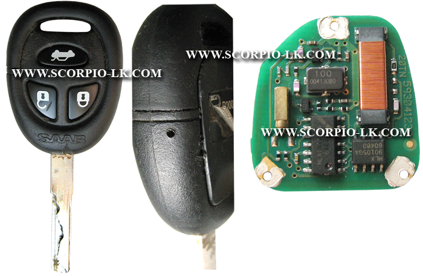
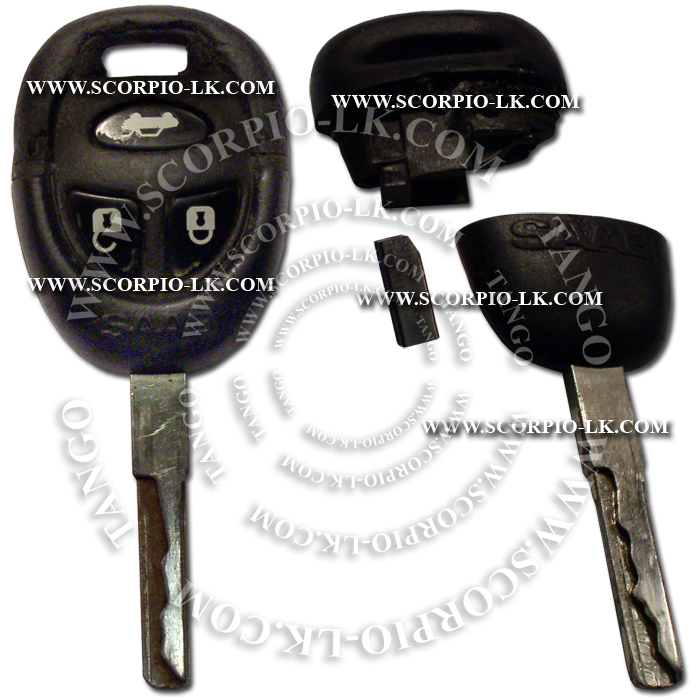

|
Type 1 |
Top Previous Next |
|
It is possible to read both keys selecting the SAAB transponder type. Keys are factory programmed and data cannot be changed. It is possible to copy keys on T5 or TK5551 transponders.
The "Key with transponder" type contains a transponder, that is a bit longer than standard PCF7930,35,36 etc.
Original emulator and transponder have very wide work radius. Therefore if T5 or TK5551 used it is necessary to place it as close as possible to an immo antenna.
Key with emulator To open a key the lock mechanism should be pressed through the hole. 
Key with transponder  |